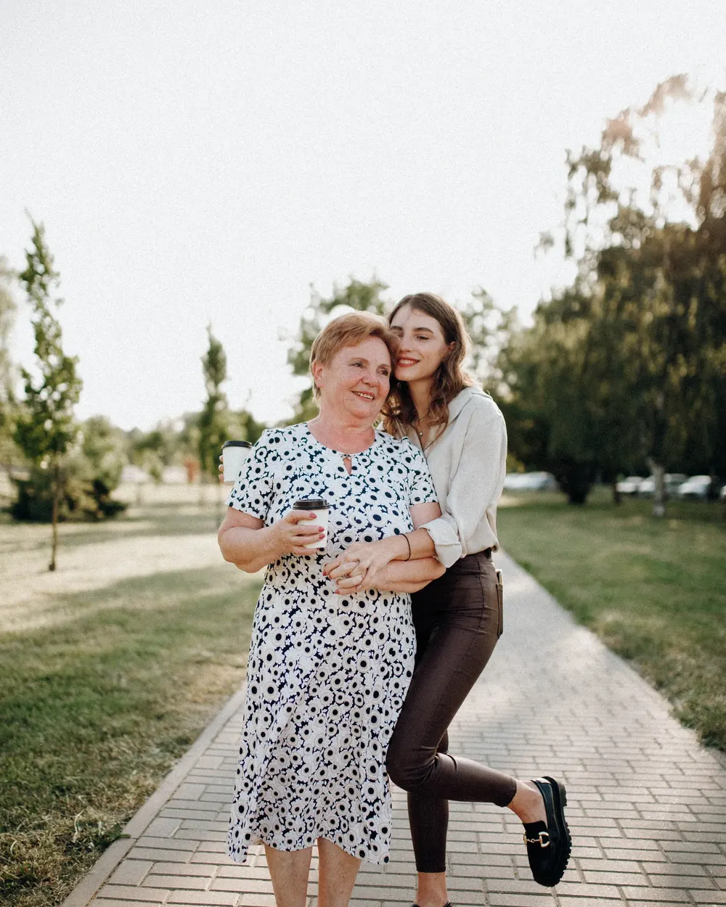
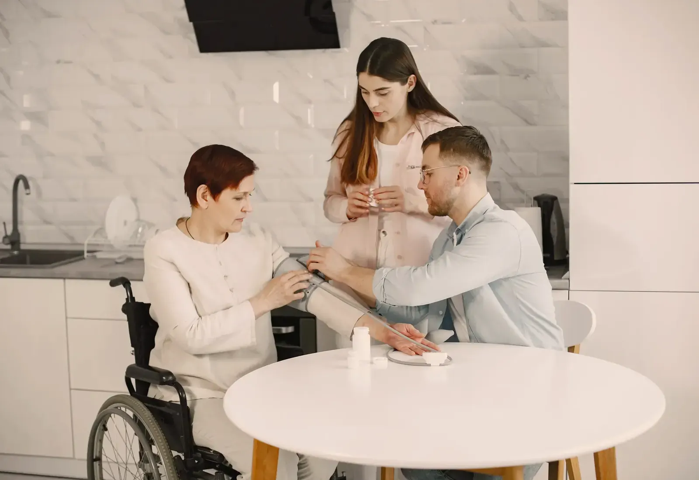
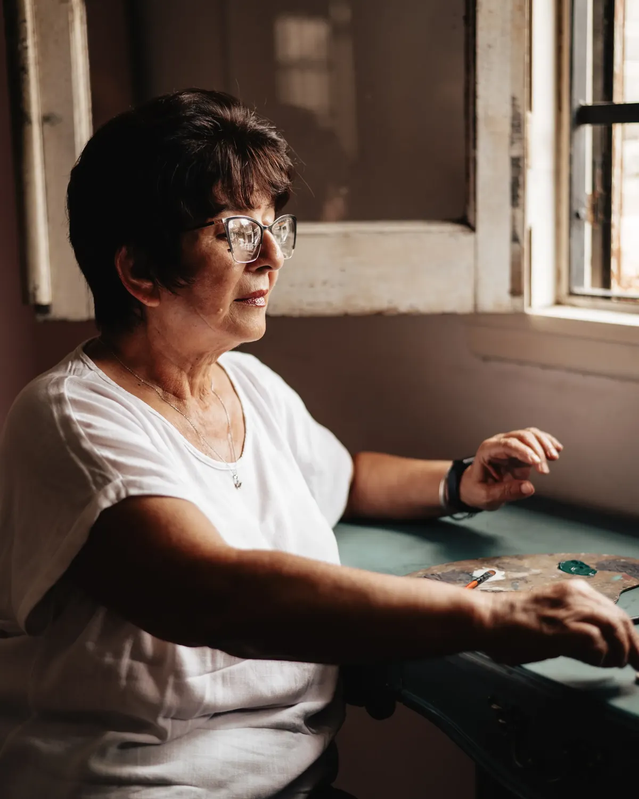
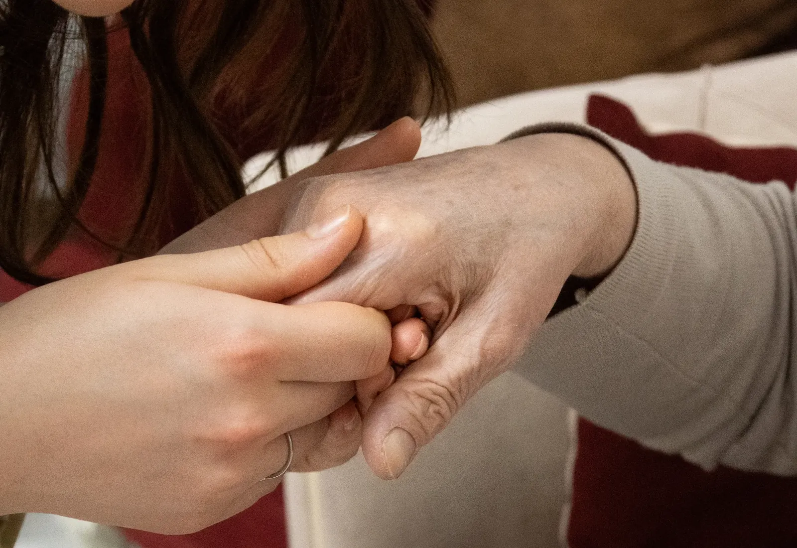

Compañía y rutina
Conversación, lectura, juegos y caminatas por el barrio. La rutina sostenida: comidas a horario, siesta y la novela de la tarde.
Sumar a mi planCuidadores formados para acompañar el día a día: compañía, higiene, movilidad, medicación y noches. Por horas, jornada completa o 24 horas.
Se combinan como haga falta. Muchas familias empiezan con tres horas de compañía y suman higiene o noches cuando el cuadro cambia.
Conversación, lectura, juegos y caminatas por el barrio. La rutina sostenida: comidas a horario, siesta y la novela de la tarde.
Sumar a mi planBaño asistido, cambio de ropa, cuidado de la piel y del pelo. Siempre con respeto por el pudor de cada persona.
Sumar a mi planTraslados dentro de la casa, cambios de posición para evitar escaras y la tabla de ejercicios que indicó el kinesiólogo.
Sumar a mi planToma de la medicación en horario, control de presión y azúcar, y todo anotado en la libreta del día que lee la familia.
Sumar a mi planCuidador que se queda a dormir o turnos rotativos para cubrir la noche entera, fines de semana y feriados incluidos.
Sumar a mi plan
Acompañamiento al médico, a la farmacia y al banco, con el resumen escrito de lo que indicó cada profesional.
Sumar a mi planUn mensaje por WhatsApp alcanza: quién necesita ayuda, qué puede hacer solo y qué no, y en qué horarios estás complicado.
Una coordinadora visita el domicilio, charla con la persona y con la familia, y arma el plan de cuidado por escrito.
Te presentamos a la persona asignada, dejamos la libreta del día en la casa y quedamos disponibles por chat para lo que surja.


Mudarse no siempre es la respuesta: mucha gente mejora quedándose en su casa, con su rutina y con sus cosas.
El equipo de Cuidar+
La pregunta que más nos hacen no es cuánto sale: es quién va a estar. Esto es lo que revisamos antes de que alguien toque el timbre.
Curso de cuidador domiciliario y primeros auxilios vigente. Pedimos el certificado original, no una copia.
Certificado de antecedentes penales al día y dos referencias laborales que llamamos una por una antes de asignar.
Una coordinadora visita la casa cada quince días y queda disponible por chat el resto del tiempo, también los fines de semana.
Si el cuidador se enferma o falta, mandamos otro esa misma jornada. La familia nunca queda descubierta de un día para el otro.
No hace falta que sepas los nombres de los servicios. Contanos la situación y armamos el plan; después lo ajustamos en la visita.
Mi vieja no quería que entrara nadie a la casa. La primera semana fue durísima; ahora pregunta por Marisa si se atrasa cinco minutos.
Papá volvió de la internación sin poder levantarse solo. Vinieron a la casa, hablaron con la kinesióloga y en dos días estaban los turnos armados.
Trabajo todo el día y vivo a cuarenta cuadras. Saber que a las ocho de la mañana hay alguien con mi abuela me sacó un peso de encima.
Escribinos y lo vemos. Muchas veces la respuesta es más simple de lo que parece.
Preguntar por WhatsAppUn mensaje por WhatsApp alcanza para empezar. Te respondemos con las opciones concretas para tu caso, sin vueltas y sin compromiso.
11 6713-4135
Contanos qué te pareció esta demo — se lo pasamos directo a quien la armó.